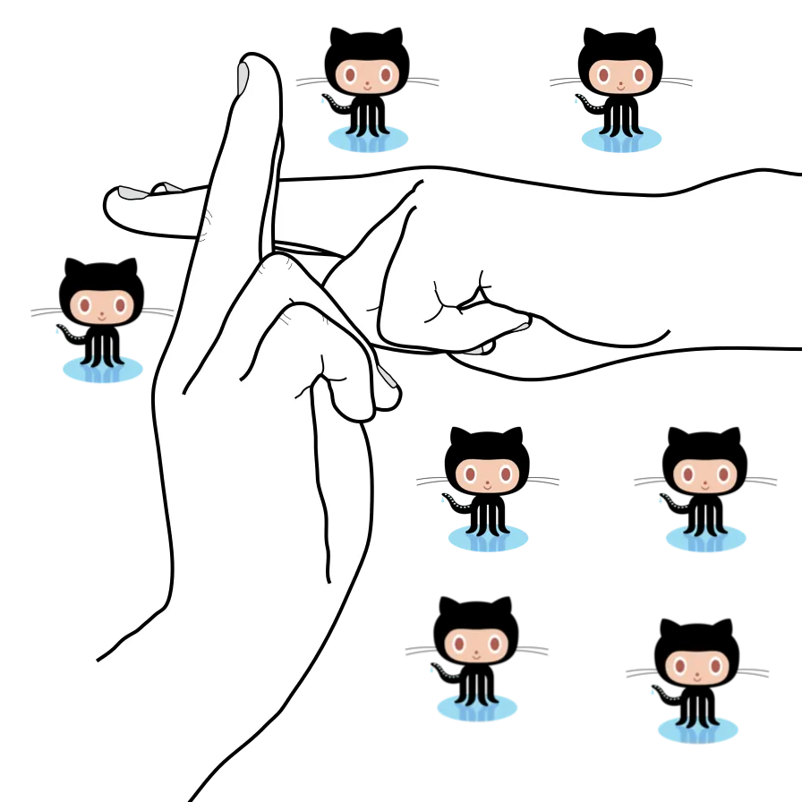

características, ejemplos, ventajas, aplicaciones
>Surgió por la creciente complejidad de los programas computarizados. Se ha convertido en un nuevo esquema de programación que creó nuevas técnicas para poder producir programas seguros de operar por más tiempo.
Gracias al vertiginoso desarrollo del procesamiento de datos computarizado, a fines de los años 60 era posible resolver problemas cada vez más complejos. Sin embargo, comprender, depurar y modificar estos programas presentaba dificultades que los hacían poco confiables.
The -C option is a comment to help identify the key.
The -f option specifies the file name for the key pair.
You can choose how to name the key pair. I followed the recommendation here and used github-{GitHub
username.

You’ll now have a public and private key in your ~/.ssh/ folder.
Add the SSH keys to your SSH-agent
Your keys are now created but won’t be used until they are added to the agent. Let’s add them.
You only need the --apple-use-keychain option on a mac. More details on adding keys to the SSH agent here.
Import all the public keys on the corresponding GitHub accounts You can quickly copy each key to the clipboard with the commands below. After each copy, Visit here while logged in to the corresponding GitHub account; Click the ‘New SSH key’ button and paste the public key from clipboard.Create GitHub host entries for all accounts The ~/.ssh/config file allows you specify a lot of config options for SSH. The commands below create the file if it doesn’t exist. And opens it in your default editing command… Likely TextEdit. $ open -e ~/.ssh/config Add these lines to the file, each block corresponding to each account you created earlier.
#ibrahimlawal account Host github.com-ibrahimlawal HostName github.com User git IdentityFile ~/.ssh/github-ibrahimlawal #ibrahimlawal-paystack account Host github.com-ibrahimlawal-paystack HostName github.com User git IdentityFile ~/.ssh/github-ibrahimlawal-paystack #ibraheemweynodey account Host github.com-ibraheemweynodey HostName github.com User git IdentityFile ~/.ssh/github-ibraheemweynodey